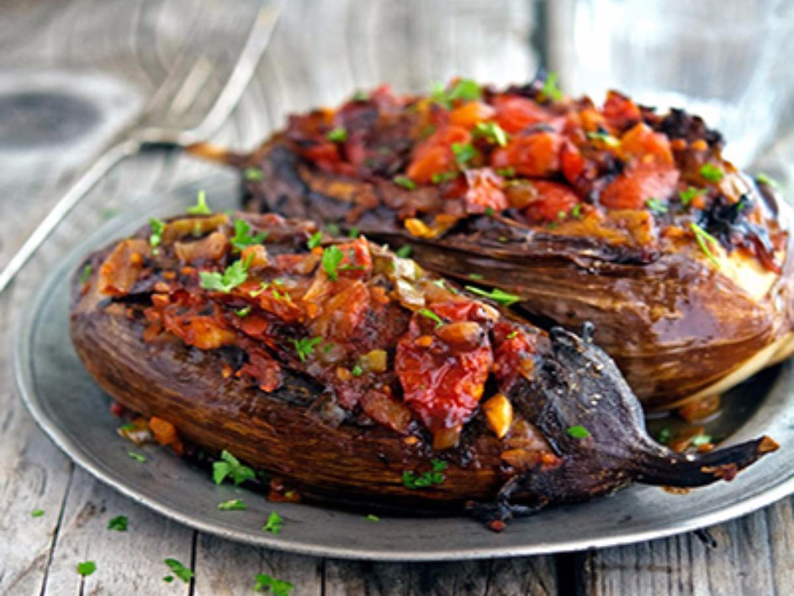

Description
Stuffed eggplants are a dish typical of many countries.
10 mins to prep / 50 mins to cook
Ingredients
- Eggplant: 1 unpeeled
- Cherry tomatoes: 2 cup
- Garlic: 1 clove, minced
- Olive oil: 3 tbsp
Steps
- Bake eggplant 30 minutes at 400 degrees F.
- Cut in half, drizzle with olive oil, and roast flesh up for another 25 minutes.
- Chop tomatoes in the meantime.
- Remove eggplant from oven, let cool. Cut out insides and mix with tomatoes, thyme, salt, pepper, garlic. Place mixture back in eggplant halves and serve.